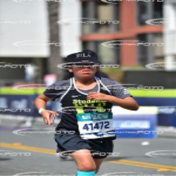
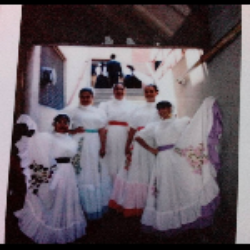
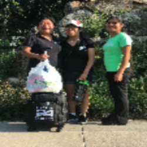
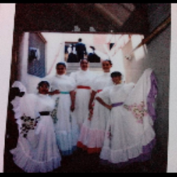
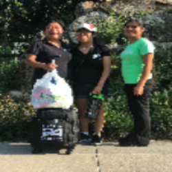

Jacqueline Hernandez
I had my first opportunity when I was in fifth grade, I participated in the 2012 “Dancing Feet Program” USA Dance LA County, this is when I realized my passion for dancing. When the program was over, I wanted to continue dancing but I couldn’t because my parents weren't able to afford paying for private lessons due to their low income. In middle school dancing classes wasn’t provided nor did I have the opportunity to dance. Fortunately, in 10th grade, I joined the UCLA After School Folkloric dance group. I wanted to represent my passion for my latino culture and community. By participating in this dance group, it made me proud of who I am as a latina student and to be part of the community as I perform in front of an audience. It is through dance that I am able to express my identity as a Mexican Latina woman.
Dancing to me is adapting to the dance steps. The first time I performed was for the Latino American Student Organization (LASO), I remember being nervous and excited to perform “La Negra.” I practiced with my peers for the whole school year to prepare for the annual performance of the year. At first, the dance was challenging because it required me to learn the basics of “zapateado.” I had ensured that my footsteps were at the rhythm of my peers because the folkloric instructor would notice the difference in rhythm. Understanding the important of the rhythm, arm movement, and footwork to expresses the dance for a particular region and culture in Latin dance is crucial.
Once I got on stage, I felt joy while I danced and heard the audience clap for our performance. As I wore the dress for the first time, I felt excited to wear a traditional dress. It has a wide range of neutral and bright colors. There was a movement when I embrace my creative side as I danced because I was able to be one with the music. I will use my creativity in the future to suggest new ideas and choreographies. Dancing is my way of connecting to my culture as I embrace my ideas, feeling and experiences.
Ever since the beginning of my freshman year of high school, I wanted to join a sport. It was in 11th grade when I joined Students Run L.A because my mom encouraged me to do so. It was the only sport I could do due to my medical condition so I decided to give it a try. At the beginning, it was really easy because it was mostly short runs and light workouts. But once the miles increased, I was really sore and tired because I was barely building up my endurance and resistant. My coach expected a lot from me and pushed me beyond my limits especially during the workout. Even though I would be sore the next the day, it didn’t stop me from going to practice because I knew it was a benefit for me to improve on my running skills. I trained four days per week and did long distance runs every Saturdays in order to participate in races where I was awarded a medal for every race. I remember not being able to sleep throughout the night because I was excited, anxious and nervous about the marathon. At the beginning of the marathon, I remember feeling tired and lazy. When I was about half way in the race, I felt motivated by elderly runners. I told myself that if they were able to make it this far why couldn’t I do the same. At that moment, I notice that I took my mind off the distance that I had to run and focused more on observing the things around me. It was one of the first things that I learned; to distract my mind about running and not focusing so much on the time nor the pain that I felt as I ran.
As a senior, I rejoined SRLA because I learned that speed doesn’t really matter but having the endurance to complete the marathon. In addition to that, I made new friends who enjoyed doing the same thing as I do. Most importantly, I decided to come back because it helped me grow as a person, I became more physically active and I socialized more with students at my school. I learn a lot from this eperience most importantly to never give up no matter how hard it get.
When I was thirteen years old, my mom taught me how to prepare Herbalife Nutrition products. Once I knew how to prepare the product, my mother allowed me to help her out with her nutritional club. Under my mother's guidance, who is a Independent Distributor I learned and understood the importance of customer services. From this experience I come to understand that I must always have a positive attitude. In addition I have experienced customers who might have not been satisfied with their order therefore I had to find a quick solution to my problem. Furthermore, I attended the Herbalife training system along with my mother which I was trained and educated about the nutritional products.
Experience
Extracurricular
• Practiced Latino dances, performed in the L.A.S.O annual assembly as well as school celebrations.
• Help raise funds by selling ticket at upcoming events
• Attended weekly meeting to dicuss upcoming performance and events
Extracurricular Activities
• Participated in Student Run L.A in the UCLA afterschool program.
• Completed the L.A marathon in 2018 and 2019.
• Trained for 8 months to prepare for the marathon.
Independent Distributor
• Assist my mother prepare healthy shakes for the customers
• Charge the customers for their purchase in an efficient and timely manner.
• Clean up to provide an enjoyable environment for the customers.
• My works hours were every Saturday, Sunday, and during vacation.
Education
UC Riverside
Portfolio




 